PD-TAZ-WH-1

UPGRADE KIT
For the LulzBot TAZ Workhorse

Introducing Printdeck for the TAZ Workhorse
Your Workhorse called. It wants a dashboard.
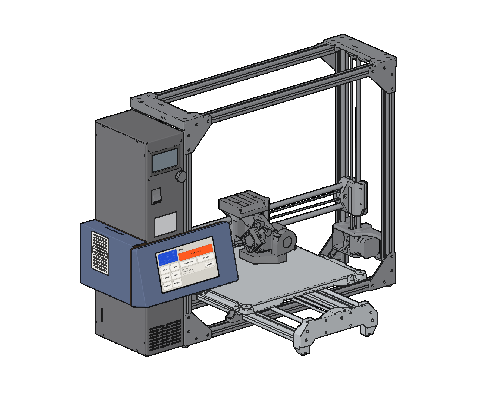
Now with touch!
Let’s be honest. Your TAZ Workhorse works fine. It prints. It has a knob. Nobody asked you to change a thing.
That is exactly why you should.
Printdeck puts a seven-inch touch screen on the front of the printer, in a case that you print on the very printer you upgrade. The printer builds its own upgrade. If that is not the future, we do not know what is.
Inside is Klipper, ported to Go, in one program. It plans every move with the same look-ahead as the printer, so the time left is the real time left. Not a guess. Not a mood.
It updates itself. It flashes the firmware of the printer for you. It even takes over the old display of the printer and puts the same menus on it, so the knob gets a promotion too.
No drilling. No nuts in the rail. Two cover screws and two printed clips. If you can turn a hex key, you are qualified.
- 7-inch color touch screen, mounted wide
- The Klipper host, in Go, in one program
- Time left from the motion planner
- Signed updates that install themselves
- 310 g of PLA, 18 h 28 min, no supports
✂
YES! Upgrade my Workhorse. I have no good reason.
☐ Because I can☐ Because I can☐ Both
NamePrinter
Mail to: your own printer. Allow 18 h 28 min for delivery.
Printdeck is free software (AGPL-3.0). Printer not included. LulzBot and TAZ Workhorse are names of their owner. Printdeck is not made by LulzBot and is not connected with LulzBot. The time left is exact for the moves of the file; the heating and your pauses are your own business.
Contents
- Upgrade the Workhorse
- What you build4
- Print the parts5
- What you need7
- Before you start9
- Prepare the drive11
- Build the mount
- Build the mount12
- Connect and start19
- Set up
- Connect to Wi-Fi21
- Choose your printer23
- Install the Klipper firmware25
- Meet your Printdeck
- The deck26
- The display of the printer27
- The deck in a browser28
- Print a part
- Send a file from the slicer29
- Start a print30
- Watch the print32
- Change the filament
- Change the filament38
- Move and heat
- Move the head and heat40
- Level and calibrate
- Level and calibrate42
- Look after the printer
- Look after the printer46
- Update the Printdeck49
- When something goes wrong
- When something goes wrong50
- Settings51
3
What you build
This kit puts the Printdeck on the front left of your TAZ Workhorse. The 7 inch touch screen is in a wide head below the TAZ Workhorse logo, and the Raspberry Pi 5 is in a pod on the left side of the electronics chassis. The head leans back 15 degrees, so you see the screen from the front of the printer.
You print the parts on the Workhorse itself. Two printed clips snap into the front rail, and two screws of the side cover hold the plate. You drill no hole in the printer, and you put no nut in the rail.
7 printed parts310 g of PLA18 h 28 min of printingNo supportsNo holes in the printer
The deck screens in this booklet are the wide screens: the display is mounted wide in the head.
Upgrade the Workhorse
4
Print the parts
The STL files are in lulzbot/stl/, in their print orientation. Load them as they are. The numbers come from slices with the Cura profiles of the mount: LulzBot TAZ Workhorse, SE tool head, 0.5 mm nozzle, 2.85 mm PLA.
| Part | Colour | Filament | Time | Cost |
|---|
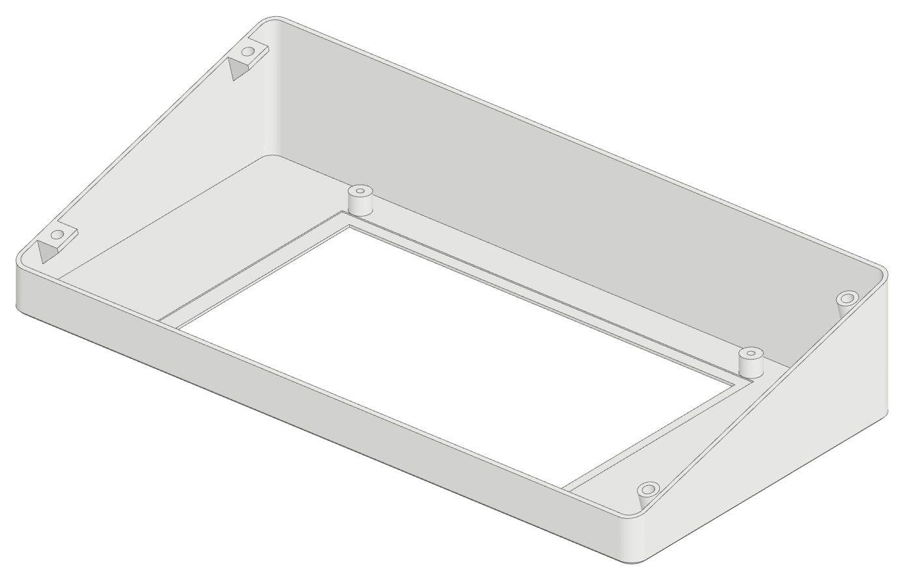 | head
stl/head.stl |
Navy | 92 g | 5 h 24 min | $2.12 |
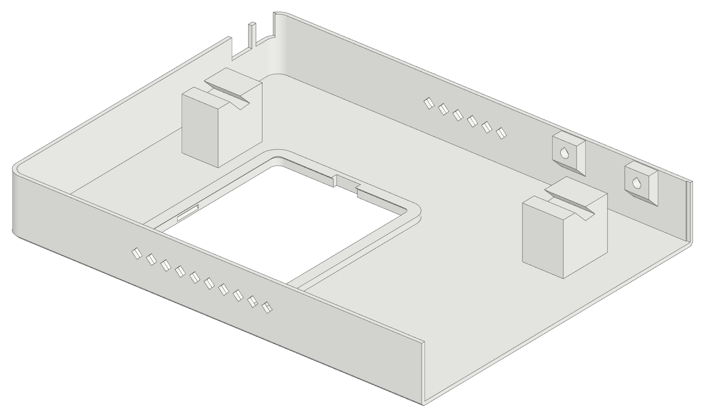 | pod
stl/pod.stl |
Navy | 75 g | 4 h 17 min | $1.72 |
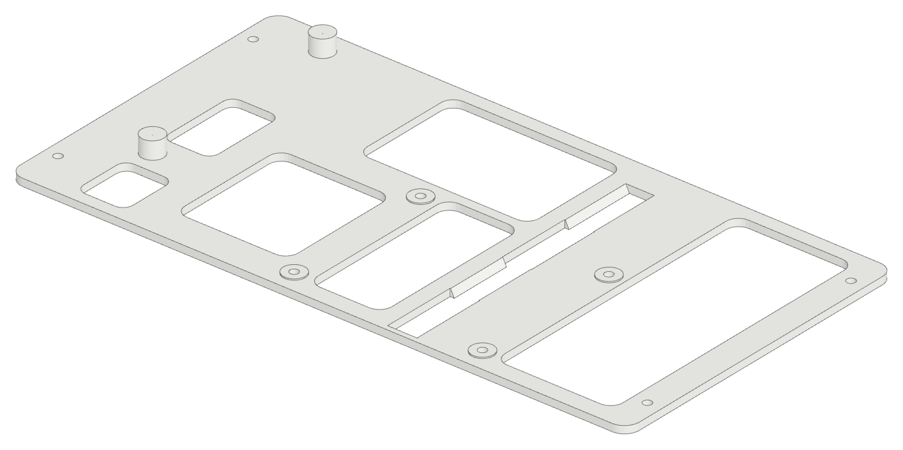 | back
stl/back.stl |
Orange | 66 g | 4 h 30 min | $1.52 |
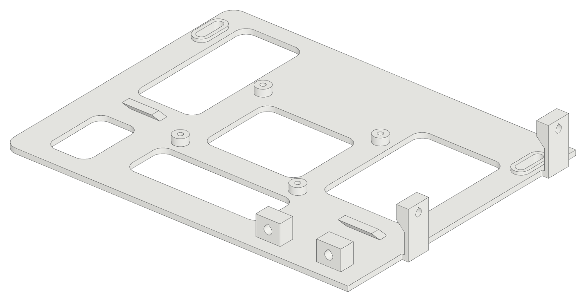 | plate
stl/plate.stl |
Orange | 53 g | 2 h 52 min | $1.22 |
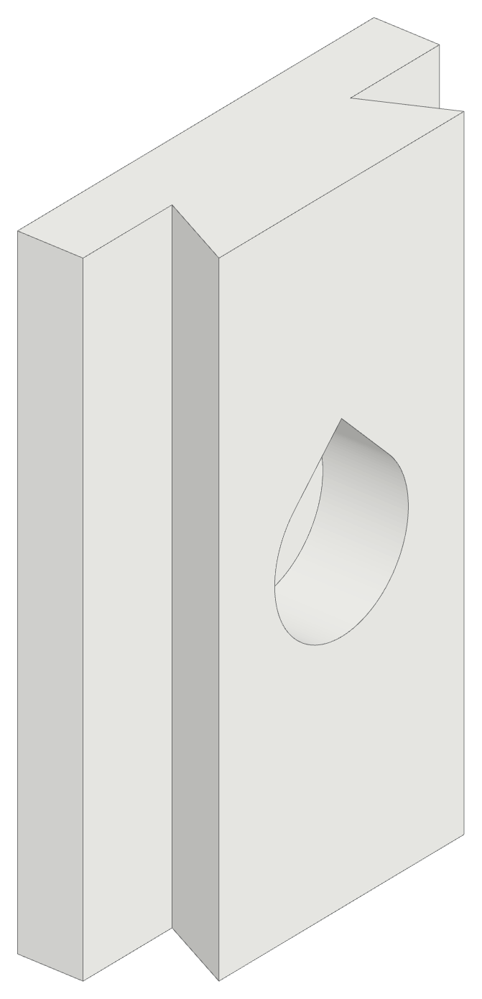 | clip (2 ×)
stl/clip.stl |
Orange | 12 g | 0 h 38 min | $0.28 |
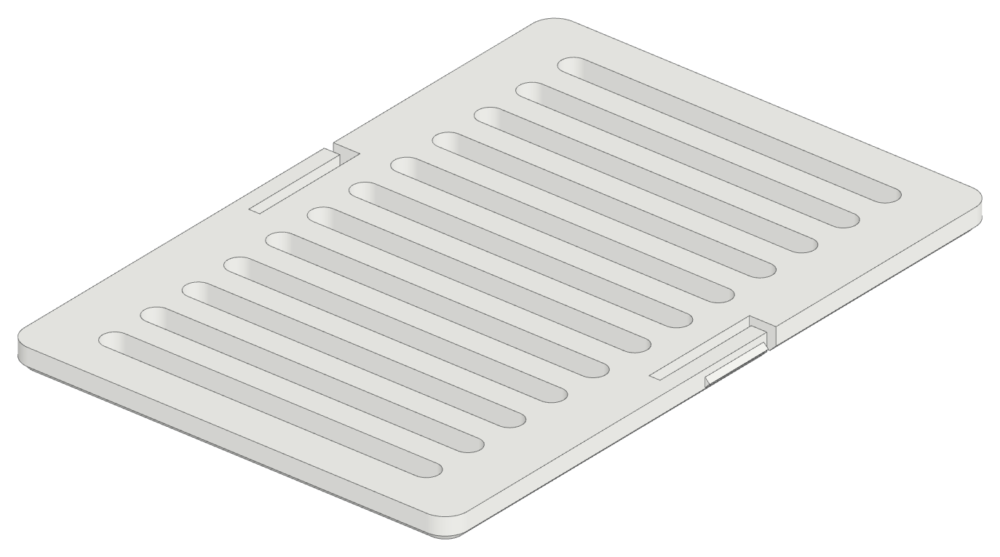 | grille
stl/grille.stl |
White | 12 g | 0 h 47 min | $0.28 |
Total: 310 g of PLA (39 m), 18 h 28 min of printing, $7.13 at $22.99 a kilogram. The fit test of the screen opening (stl/fit_display.stl, 21 g, 1 h 19 min) is optional.
Print the head and the back panel first: steps 2 to 4 need them. Then print the plate, the clips, the pod and the grille.
Upgrade the Workhorse
5
Settings
| Profiles | One Cura profile for each part: run python3 cura/make_profiles.py --install with Cura closed, then pick “Printdeck - LulzBot …”. |
| Printer | LulzBot TAZ Workhorse, SE tool head, 0.5 mm nozzle |
| Head, pod, back panel, grille, clip | 0.3 mm layers, 1.5 mm walls, 1.2 mm top and bottom, 15 % grid infill, skirt |
| Plate | 0.3 mm layers, 1.5 mm walls, 15 % grid infill, skirt |
| Supports | Off for all parts. Every hole, pocket, and hook has 45° faces. A slice of each part with supports on (60°, everywhere) adds 0 g of support. |
Upgrade the Workhorse
6
What you need
Hardware
| Item | Where |
|---|
| 6 × | M3 × 10 socket cap head | 2 × plate on the cover (upper pair of PP-FP0164); 4 × back panel into the head |
| 2 × | M3 × 12 socket cap head | 2 × plate flange into the back panel |
| 12 × | M3 × 6 socket cap head | 4 × display board; 4 × Pi; 4 × drive on the back panel |
| 2 × | M3 × 8 socket cap head | 2 × pod onto the plate |
| 2 × | M3 washer | 2 × under the cover screws |
| 10 × | M3 × 5 heat-set insert | 4 × head, display bosses (3 to 5 mm fits); 4 × plate, Pi bosses (3 to 5 mm fits); 2 × plate, pod screw blocks (3 to 5 mm fits) |
| 6 × | M3 × 7 heat-set insert | 4 × head, back screws (3 to 7 mm fits); 2 × back panel, flange screws (3 to 7 mm fits) |
All the screws are M3 socket cap screws, for a 2.5 mm hex key. A shorter or a longer heat-set insert fits, up to the length in brackets.
Upgrade the Workhorse
7
Electronics and cables
- 1 × Raspberry Pi 5 (from the Slate build)
- 1 × Raspberry Pi Active Cooler, max. 10.5 mm high (buy, if you do not have one)
- 1 × Adafruit 7 inch HDMI display with touch, product 2407 (from the Slate build)
- 1 × 2.5 inch SATA drive with its USB adapter board, the boot drive (from the Slate build)
- 1 × HDMI cable: micro HDMI to HDMI, straight plugs, a flat ribbon of 30 cm or more (the route is 24 cm). The ribbon kit of the Slate fits.
- 1 × Micro USB to USB-A cable, straight plugs, max. 3.5 mm thick, 15 cm or more (the route is 12 cm).
- 1 × USB 3 cable for the drive: micro-B SuperSpeed to USB-A, 15 to 20 cm (the route is 13 cm).
- 1 × USB-A to USB-B cable for the printer: 31 cm in the pod, plus the run behind the printer to the USB socket of the printer board.
- 1 × USB-C power cable: 9 cm in the pod, plus the run behind the printer to the Raspberry Pi 27 W USB-C power supply.
Tools
- Drill with a 3.2 mm bit (for the four holes of the Pi)
- Soldering iron with a heat-set insert tip, at 220 °C
- 2.5 mm hex key (M3 socket cap screws)
- One strip of 2 mm foam tape, between the panel and the display board
Upgrade the Workhorse
8
Before you start
The mount uses two screws of the printer and the front rail. The upper pair of screws of the side cover (PP-FP0164) holds the plate. Two printed clips in the front slot of the front left rail hold the right end of the head. Two screws through a flange of the plate hold up the head, and the pod slides onto two hooks of the plate.
Upgrade the Workhorse
9
Check on your printer
- 1Check the rear screw of the upper pair on the cover: 237.3 mm above the bottom edge of the cover, and about 3.6 mm from the rear edge of the cover. The design uses the value of the LulzBot drawing.
- 2Measure the TAZ Workhorse logo on the front of the chassis. The top of the head is 260 mm above the bottom of the chassis; the LulzBot drawing gives the logo at 264 mm, and the drawing is not to scale.
- 3Look at the front slot of the front left rail. The clips need a free slot from 150 to 230 mm above the bottom of the chassis: remove the dust cover there, if the rail has one.
- 4Move the bed to the front and the X axis to the bottom. Check that the head is clear of the bed, the print, and the tool head: it is 72 to 324 mm to the right of the left face of the chassis, and 125 to 260 mm above the bottom of the chassis.
- 5Check behind the printer: the printer USB cable and the power cable leave the pod at the rear face of the chassis, 128 to 149 mm above its bottom.
Upgrade the Workhorse
10
Prepare the drive
The Printdeck starts from the 2.5 inch drive. Write the Printdeck image to it before you build the mount: the drive goes into the head in step 3.
- 1Build the image on a computer with Docker: run os/build.sh in the Printdeck repository. It writes os/out/printdeck.img.xz.
- 2Connect the drive to the computer with its USB adapter. Write printdeck.img.xz to the drive with Raspberry Pi Imager (Use custom) or balenaEtcher.
- 3Open the PRINTDECK partition of the drive, and open printdeck.txt in a text editor.
- 4Set display_rotate=180. The display is upside down in the head, so the deck turns its picture. A width larger than the height gives the wide layout.
- 5Fill in the name and the password of your Wi-Fi network, if you want to skip the Wi-Fi setup. The deck reads the file at each start, and then clears the password in it.
If the picture is upside down at the first start, set display_rotate=0.
Upgrade the Workhorse
11
Build the mount
Each step names the parts and the hardware that it needs. The parts from an earlier step have the number of that step.
1Drill the Pi
Pi 53.2 mm drill
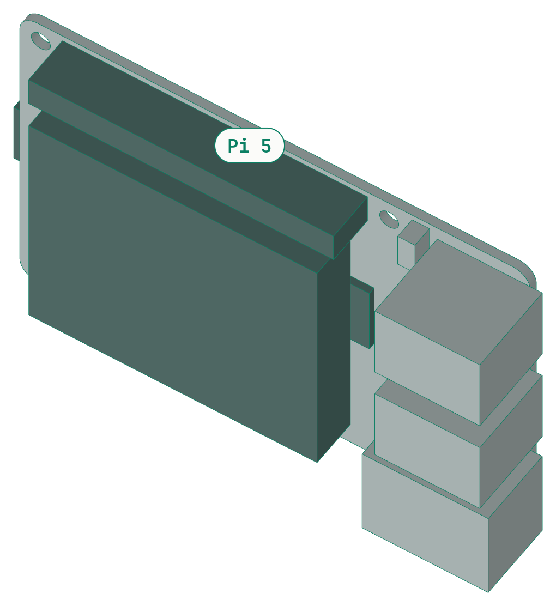
- 1The mounting holes of the Pi 5 are 2.7 mm, for M2.5. Drill the four holes to 3.2 mm for M3.
- 2Drill slowly, from the top of the board, with the board flat on a piece of wood.
- 3Keep the drill straight. Stay inside the plated ring of each hole: do not touch the tracks or the parts around it.
- 4Remove all the dust from the board with a brush or with air before you continue.
Skip this step if your Pi already has 3.2 mm holes.
Build the mount
12
2Display into the head
headdisplayfoam tape4 × M3 × 5 insert4 × M3 × 7 insert4 × M3 × 6
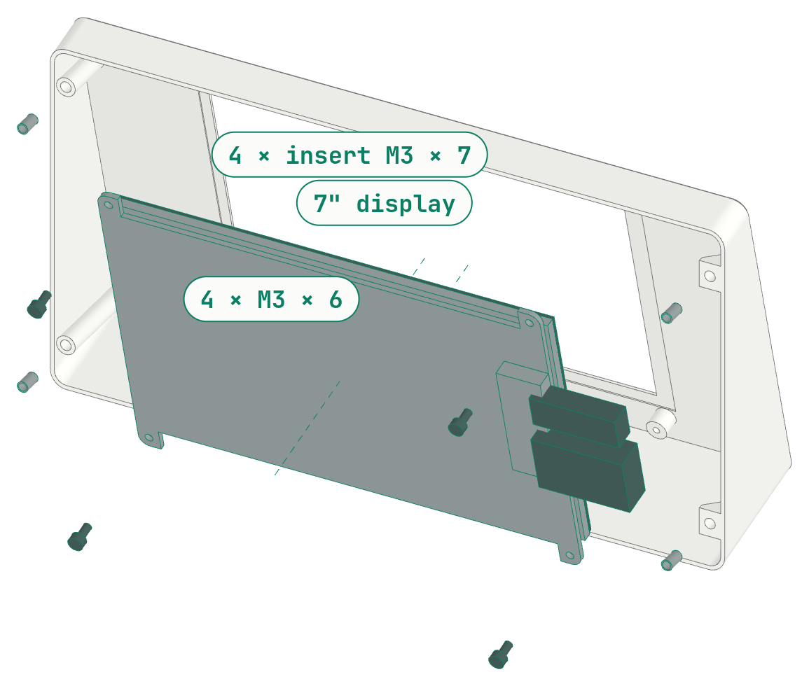
- 1Press the four M3 × 5 inserts into the four bosses of the head, and the four M3 × 7 inserts into the two columns and the two blocks at the back. Use a soldering iron at 220 °C. Stop when the insert is flush.
- 2Put the head face down on a soft cloth.
- 3Put the display glass down into the pocket: the sockets of the board at the left (seen from the front), the FPC edge of the panel at the top.
- 4Put the foam tape on the back of the panel. Put the board on the four bosses, and attach it with four M3 × 6 screws.
- 5Connect the HDMI cable and the micro USB cable to the board. Both plugs point to the left.
The screen opening is at the centre of the face: the border is the same at the left and the right.
Build the mount
13
3Drive on the back panel
back paneldrive2 × M3 × 7 insert4 × M3 × 6
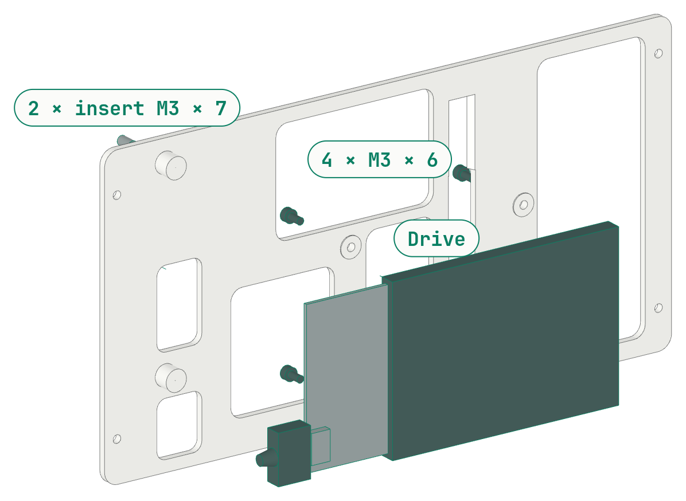
- 1Press the two M3 × 7 inserts into the two bosses on the front face of the back panel, from the rear.
- 2Put the drive on the front face of the back panel: the adapter toward the left (the pod side), the M3 holes against the panel.
- 3Attach it with four M3 × 6 screws from the rear face of the panel.
- 4Connect the micro-B plug of the drive cable to the adapter.
4Back panel onto the head
head (step 2)back panel (step 3)4 × M3 × 10
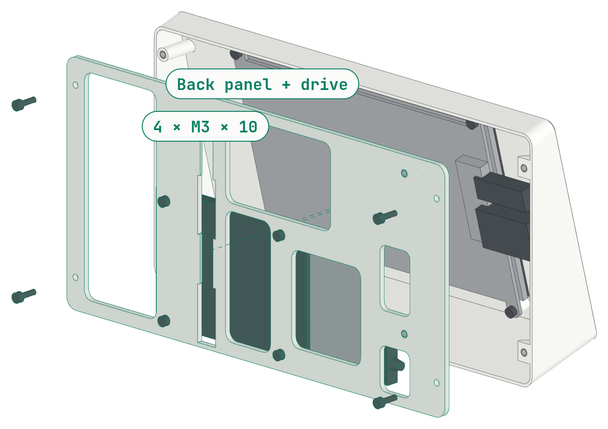
- 1Put the display cables through the upper window at the left of the back panel, and the drive cable through the lower window.
- 2Put the back panel on the head. Attach it with four M3 × 10 screws from the rear face, into the inserts.
The heads of the screws stay on the rear face. They are behind the head, and they do not show.
Build the mount
14
5Plate on the cover
plate6 × M3 × 5 insert2 × M3 × 102 × M3 washer
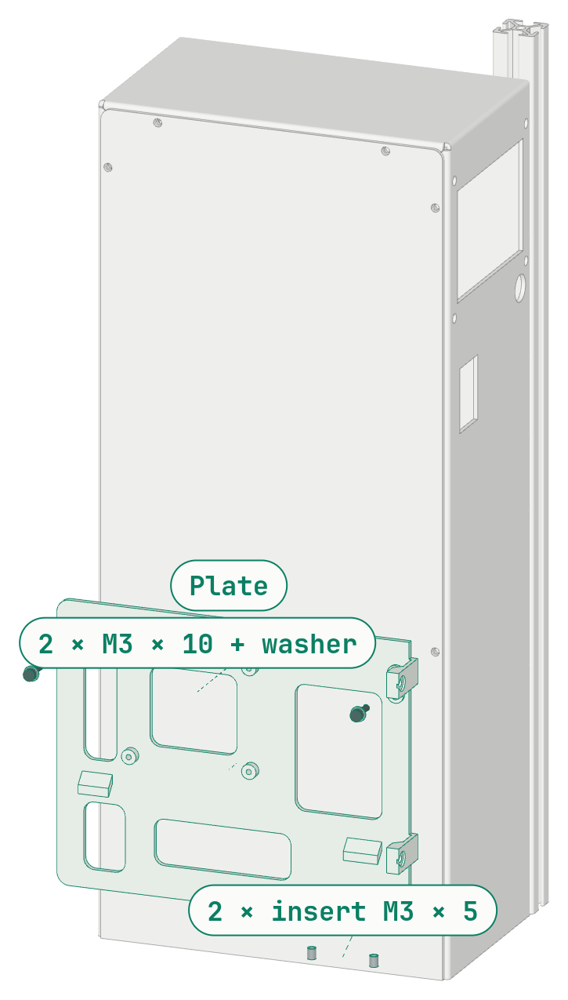
- 1Press four M3 × 5 inserts into the four Pi bosses, and two into the two blocks at the bottom of the plate (from below).
- 2The cover is PP-FP0164, with 10 screws. Remove its upper pair of screws from the left side of the chassis: the front one and the rear one, 237.3 mm above the bottom edge of the cover.
- 3Put the plate on the cover, with the slots of the two pads over the two holes. Attach it with two M3 × 10 screws, each with a washer.
The slots in the pads let the plate fit 5 mm up or down and 0.5 mm to the front or the rear. The pad is 4 mm thick, so the M3 × 10 goes into the nut of the chassis the same depth as the old screw.
6Pi on the plate
Pi 5 (step 1)Active Cooler4 × M3 × 6
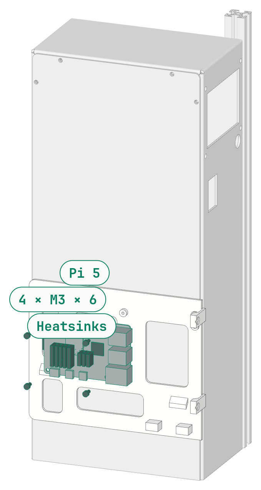
- 1Put the Active Cooler on the Pi, and connect its cable to the fan connector.
- 2Put the Pi on the four bosses: the USB ports toward the front of the printer, the USB-C and HDMI ports down.
- 3Attach it with four M3 × 6 screws.
Build the mount
15
7Clips in the rail
2 × rail clip
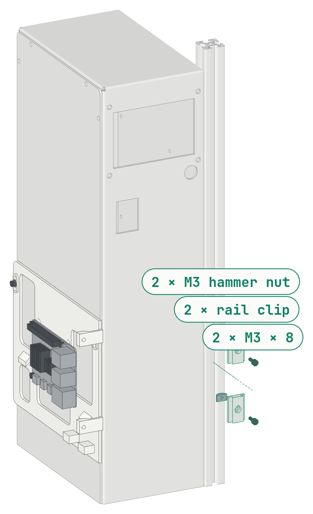
- 1Hold the back panel on the front face of the front left rail, with its bottom edge 125 mm above the bottom of the chassis. Mark the top of the two long slots in the panel on the rail.
- 2Push each clip into the front slot of the rail, with its top at a mark, until it clicks. The dovetail key points to the front.
The clips need no nut: their two legs snap behind the lips of the slot. A clip slides in the slot, so you can move it up or down by hand.
8Hang the head
head (step 4)2 × M3 × 12
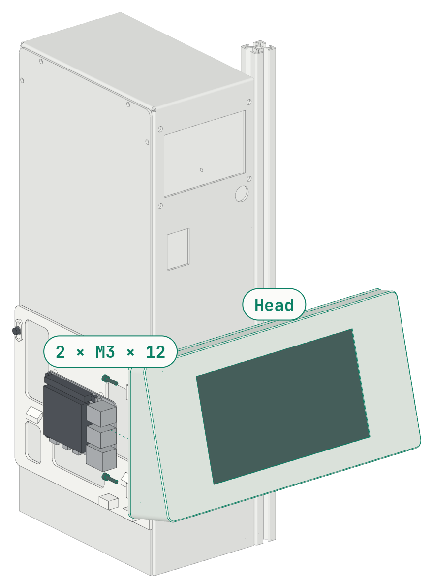
- 1Hold the head 30 mm above its place, with the two windows of the back panel over the two clip keys. Push the back panel against the clips.
- 2Let the head drop 30 mm. The keys go into the dovetail slots.
- 3Lead the display cables and the drive cable out of the windows into the pod.
- 4From inside the pod, put the two M3 × 12 screws through the flange of the plate into the back panel.
The two screws through the flange hold up the head. The clips hold its right end against the rail.
Build the mount
16
9Cables
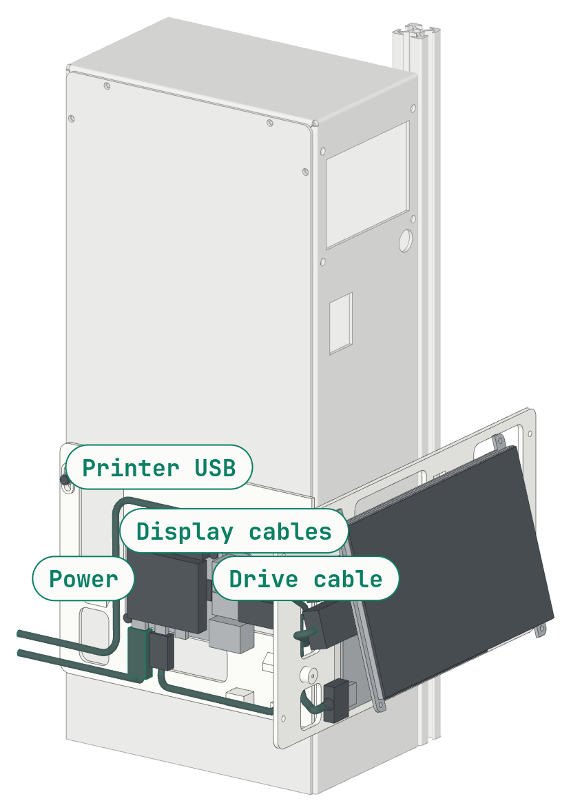
- 1Connect the HDMI cable to the HDMI 0 port (next to the USB-C port).
- 2Connect the touch cable to the upper USB 3 port (blue), and the drive cable to the lower USB 3 port.
- 3Connect the printer cable to the lower USB 2 port. Lead it up the front of the pod, over the Pi, down at the rear end of the Pi, and out of the upper notch in the rear wall.
- 4Connect the power cable to the USB-C port. Lead it down and to the rear, out of the lower notch.
- 5Behind the printer, connect the printer cable to the USB socket of the printer board, and the power cable to the power supply.
No cable goes through a hole in the printer, and no cable shows on the front or the side.
Build the mount
17
10Grille and pod
grillepod2 × M3 × 8
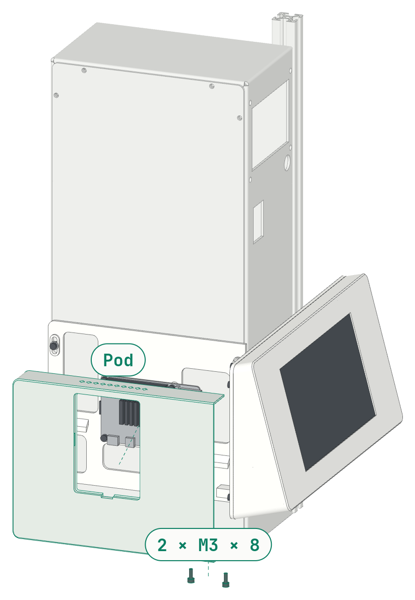
- 1Push the grille into the pocket of the pod from the outside, with the fingernail notch at the bottom. Push both sides until the two tabs click. The grille is flush with the pod.
- 2Hold the pod about 6 mm low and 6 mm out from its place, and 4 mm to the rear. Move it 4 mm to the front, then push it up and in at 45° onto the two hooks of the plate. The rear wall goes over the two cables.
- 3Put the two M3 × 8 screws up through the bottom of the pod into the plate. They pull the pod up, and the 45° hooks pull it onto the plate.
To remove the grille, put a fingernail or a small screwdriver into the notch at its bottom edge, and lift.
Build the mount
18
Connect and start
| Cable | Length | Route |
|---|
| HDMI | 24 cm | HDMI 0 port to the display, plug to plug |
| Touch USB | 12 cm | upper USB 3 port to the display, plug to plug |
| Drive | 13 cm | lower USB 3 port to the drive, plug to plug |
| Printer USB | 31 cm | lower USB 2 port to the rear face of the chassis |
| Power | 9 cm | USB-C port to the rear face of the chassis |
- 1Connect the power cable to the Raspberry Pi 27 W USB-C power supply behind the printer.
- 2Connect the printer cable to the USB socket of the printer board.
- 3Turn on the printer and the power supply. The deck starts from the drive and opens the setup. The guides after this page show the setup.
Build the mount
19
To open the mount
- 1Remove the two screws under the pod. Move the pod down and out at 45 degrees, off the hooks, then 4 mm to the rear and out. To remove the grille, lift it at the fingernail notch.
- 2Disconnect the cables from the Pi. Remove the two flange screws from inside the pod.
- 3Lift the head 30 mm and pull it off the clip keys. The display and the drive come off with it.
- 4To get to the display or the drive, remove the four screws from the rear of the back panel.
Build the mount
20
Connect to Wi-Fi
At the first start, the deck makes its password and opens the setup.
- 1Switch on the Printdeck. The setup opens.
- 2Tap your Wi-Fi network, then type its password.
- 3Wait until the deck is connected, then tap Next.
- 4Write down the address and the password, then tap Finish.
Set up
21
Choose your printer
A new Printdeck has no printer config. The deck then shows the printer setup.
- 1Connect the printer to the Printdeck with a USB cable, and switch the printer on.
- 2Wait until the deck finds the board. Tap Search again if it does not show.
- 3Tap Choose printer. The printers of the brand of your board are at the top.
- 4Tap your printer, then Use. Klipper restarts with its config.
Set up
23
Install the Klipper firmware
The board of the printer must run the Klipper firmware of this Printdeck. The deck writes it through the USB cable.
- 1Open Maintenance, then tap Firmware. A new board shows Install Klipper firmware on the setup screen.
- 2Tap Write. Do not switch off the printer until the deck shows the result.
- 3Tap OK. Klipper restarts and connects to the board.
Set up
25
The deck
Printdeck is a touch screen for a 3D printer that runs Klipper. It shows the print, and it controls the printer.
The deck shows the display of the printer at the top of each screen. When the printer does not print, it shows the idle screen. The largest key is the action that you need most: Print a file.
Meet your Printdeck
26
The display of the printer
When the printer has a display, the deck draws it. The display shows the status screen, the same picture as the idle screen of the deck.
Turn or click the knob to open the menu. The menu has the same pages and keys as the touch screen: the knob moves the cursor, and a click taps the key. The touch screen shows the cursor with an orange ring. The top item goes back: Status on the home menu, Back on a page. A long click also goes back. With no turn for 20 seconds, the display shows the status screen again.
While an action runs, the display shows an animation.

The status screen

During a print

The home menu: turn the knob to choose

A page: Maintenance

An action runs
Meet your Printdeck
27
The deck in a browser
Open http://printdeck.local in a browser on the same network, and log in with the password of the deck. The browser shows the same screens as the touch screen, sharp at the pixel density of the phone. Each browser has its own screens, so a phone can show the files while the deck shows the print.
On a phone, use Add to Home Screen: the deck then opens as an app, with no browser bars.
The page http://printdeck.local/system shows the version, the services, the logs and the API key for slicers. It also installs an update: choose the update file, then Install. The deck writes the other system slot and restarts into it. If the new system does not start, the deck goes back to the old one.
Meet your Printdeck
28
Send a file from the slicer
The deck answers the OctoPrint API that slicers use to send files and to start prints.
In Cura, add the deck with the OctoPrint Connection plugin. The deck asks "Allow Cura to use the Printdeck?". Tap Allow.
In OrcaSlicer or PrusaSlicer, add a printer of the type OctoPrint with the address http://printdeck.local, and the API key of the system page.
Print a part
29
Start a print
The files are the G-code files that the slicer sent, or that you uploaded in the browser. The newest file is at the top.
Each file shows what the slicer wrote into it: the print time, the filament and the layer height. Cura, PrusaSlicer, OrcaSlicer and Bambu Studio write this data. A thumbnail shows when the slicer adds one.
- 1Tap Print a file on the idle screen.
- 2Tap the file. Check the print time, the filament and the temperatures.
- 3Tap Print, then Print again.
Print a part
30
Watch the print
During a print, the deck shows the screen of the phase of the print. The deck knows the phase from the printer and from the G-code of the file.
- 1Watch the first layer. Use − and + to set the height of the nozzle while it prints.
- 2Tap Save to keep the Z offset for the next prints.
- 3Use Tune to change the speed, the flow or the fan while the print runs.
- 4When the print is done, wait for the bed to cool, then take the part off.
Print a part
32
Change the filament
Set the loaded filament here, so that Preheat uses its temperatures. The guided change heats the nozzle, unloads the old filament and loads the new one.
- 1Open Filament, then tap Change filament.
- 2Tap the new filament. The nozzle heats to its temperature.
- 3Tap Unload, and hold the filament lightly while it comes out.
- 4Push the new filament into the extruder until it stops, then tap Load.
- 5Check that clean plastic of the new color comes out, then tap Done.
Change the filament
38
Move the head and heat
- 1Open Move, and tap Home all after each start of the printer.
- 2Hold the joystick to move the head. Use Z for the height.
- 3Tap a temperature on the idle screen to set it with the keypad.
Move and heat
40
Level and calibrate
Maintenance lists the calibrations that your printer has. The list comes from the config of the printer.
- 1Open Maintenance.
- 2Tap Bed tilt or Bed mesh to probe the bed. The deck shows the action until it ends.
- 3Tap Probe Z offset for the paper test. Move the nozzle down until a sheet of paper drags a little, then tap Accept.
- 4Tap PID tune after you change a heater or a fan. A PID tune runs for about 10 minutes.
- 5Tap Save config to write the results. Klipper restarts.
Level and calibrate
42
Look after the printer
Machine has the information of the printer, the history of the prints, the macros and the console.
Look after the printer
46
Look after the printer
47
Look after the printer
48
Update the Printdeck
The deck checks for a new version once a day. Machine then shows Software update in orange.
Each version has a signature. The deck installs only a version with a valid signature of Printdeck. It writes the other system slot and restarts into it. If the new system does not start, the deck goes back to the old one.
- 1Open Machine, then Software update.
- 2Read the notes of the new version, then tap Install. The deck does not install during a print.
- 3Wait while the deck downloads and writes the update. It restarts into the new version.
Look after the printer
49
When something goes wrong
When Klipper stops with an error, the deck shows all the lines of its message.
- 1Read the message. It often names the setting in printer.cfg.
- 2After a stop or a power cut of the printer, tap Firmware restart.
- 3After a change to printer.cfg, tap Restart Klipper.
When something goes wrong
50
Settings
The file printdeck.txt on the PRINTDECK partition holds the settings. Put the disk in a computer to change it. The deck reads it at each start, then clears the Wi-Fi password in it.
| wifi_ssid, wifi_password, wifi_country | The Wi-Fi network |
| hostname, timezone | The name on the network, and the time zone |
| display_rotate | 90 or 270 for a display that is mounted tall, 0 or 180 for one that is mounted wide |
| touch_invert_x, touch_invert_y, touch_swap_xy | 1 turns an axis of the touch screen |
| preheat_tool, preheat_bed | The temperatures of Preheat with no filament set |
| night_from, night_to | The hours of the night colors |
| printer.cfg (a file) | A Klipper config. The deck takes it at the next start. |
When something goes wrong
51
Printdeck is free software: AGPL-3.0, with the Go port of Klipper under GPL-3.0. The deck draws every picture of this booklet.
https://github.com/beetlebugorg/printdeck